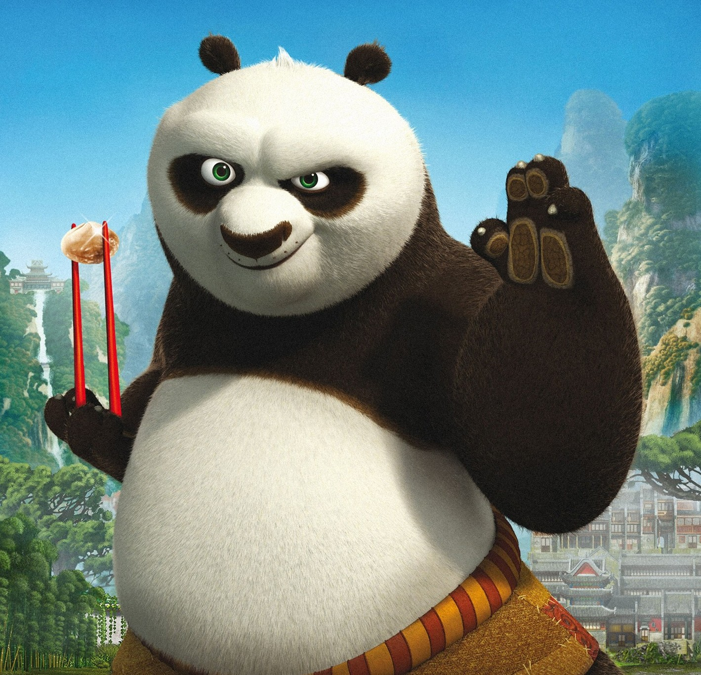

КУНГ-ФУ-ПАНДА
Воин Дракона, Мастер По (Лотос)

Премьера - 5 июня 2008
Вид - Большая панда
Пол - мужской
Возраст - 24 года
Образование
- Младенчество
- Познание мира в Деревне Панд
- Детство
- Познание секретов готовки знаменитого секретно-ингредиентного лапшичного супа
- Зрелость
- Познание мастерства кунг-фу
- Постоянно
- Совершенствование мастерства в поедании пельмешек
Работа
Детство
Собирает фигурки Неистовой пятерки
До нашествия Тай Лунга
Лапшичник
После победы над Тай Лунгом
Мастер кунг-фу - Воин Дракона
Постоянно
Поедание пельмешек, лапши и прочих вкусностей
Личные качества
- Веселый и жизнерадостный
- Энергичный
- Немного невезучий и глуповатый толстяк
- Великий поклонник Неистовой пятерки и кунг-фу
- Способный к учению
- Толстая кожа, блокирующая и отржающая удары